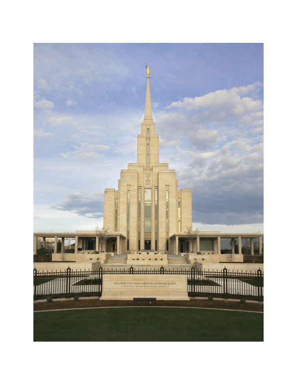
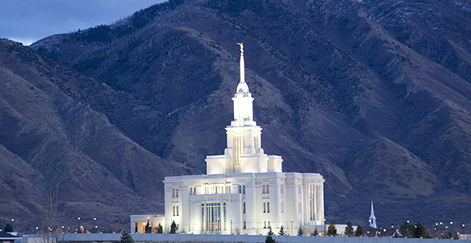

Temple Album
Home
Old
New
Large
Small
Sacred Temples Around the World
Salt Lake Temple
Logan Temple
St. George Temple
Manti Temple
Brigham City Temple
Provo City Center Temple
Cedar City Temple

Oquirrh Mountain Temple

Payson Temple